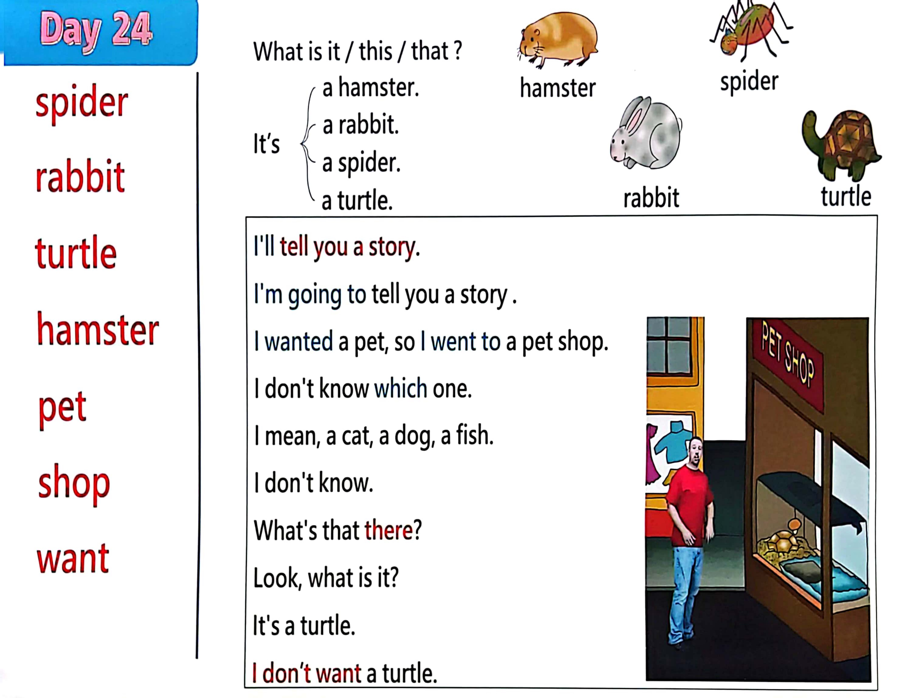

Day 24
Unit 7 · story
教材重点
教材重点依据网盘文件“第二级蓝色每日打卡全.pdf”，第 25 页对应 Day 24；保留文字整理并同时提供原图。
网盘教材重点原图 · PDF 第 25 页对应 Day 24
spider rabbit turtle hamster pet shop want hamster spider rabbit turtle a rabbit. I t’s a hamster. a spider. What i s i t / this / that ? a turtle. I ' l l tell you a story. I ' m going to tell you a story about me and Maggie met. I wanted a pet, so I went to a pet shop. I don't know which one. I mean, a cat, a dog, a fish. I don't know. What's that there? Look, what i s i t? I t's a turtle. I don’t want a turtle.

Unit 7 · story · 4–6岁
hello · look · say · come
Hello, hello, hello, hello, everyone. Hello. Hello.
台词本为机器转写，可能存在识别误差；不等同于视频逐字原声。
详细内容
Part 1 核心词汇
必须掌握 · 4 个Part 2 跟读句型与句型拓展
左侧保留台词本原句，右侧为替换练习；拓展内容不是视频逐字台词。
Hello, hello, hello, hello, everyone. Hello. Hello.
Everyone travel everywhere?
Everyone say, hello. Everyone.
Rabbit, hamster, turtle and spider.
Steve Steve, steve.
Part 3 台词本全文
来源：第2级台词本 · 024.Wow!Blue - Unit 7 - part 2 story_7_2.pdf。以下保留网盘 PDF 的机器转写文本，仅清理了文件路径页眉和空行。
Hello, hello, hello, hello, everyone. Hello. Hello.
Everyone travel everywhere?
Everyone say, hello. Everyone.
Rabbit, hamster, turtle and spider.
Steve Steve, steve.
Tell me a story.
Tell me a story, okay, maggie, I'll tell you a story, hello, boys, a girl. Hi. How are you.
Look, it's raining outside, so we have to stay in.
I'm going to tell you a story of her, me and Maggie met and first said, hello.
I wanted a pet, so I went to a pet shop.
Oh, great, look, a pet shop.
I want a pet, but I don't know which one, I mean, a cat, a dog, a fish, oh, I don't know.
Oh, what's that there? Look, what is it.
Ooh, what is it? Oh, look, a little head.
Oh, what is it? Hey, it's a turtle.
While turtles are slow, so say with me, come on, it's, ah,
Turtle, hey, and again, what is it It's a turtle, and again, it's a.
Turtle, wow, well done, but hmm, no, I don't want a turtle.
There must be more pets inside. Come on, let's go and take a look.
Wow, look at all the animals.
Oh, now I really don't know what pet I want, oh dear,
Hmm, well, let's take a look over here. What can you see.
What is it.
What can you see What is it? Oh, it's very small.
Oh, look, it's a hamster, say with me like a hamster, what is it? Hey,
It's a hamster.
It's a hamster, come on, it's a hamster here, I like hamsters, but.
I don't want a hamster as a pet, it's too small. Oh, what's over there.
What's here Oh no, oh, I don't think so.
What can you see What is it.
/
-
/2/024.Wow!Blue - Unit 7 - part 2 story_7_2.txt[2022/3/29
星期二
6:42:42]
Here it's a spider who I don't like spiders, but say with me, make a spider, as we say.
It's a spider. And again,
It's a spider. Get closer.
It's a spider, no, oh, they're scary.
I don't want a spider for a pet. No, thank you. What's next?
Ooh.
That's better. What is it? Hey, it's Sir.
Rabbit, yeah, why don't you be a rabbit with me and say,
It's, ah, rabbit, come on.
It, ah, rabbit, and again,
It's a rabbit, yeah, oh, I like rabbits. Great. Hello. Hey.
Did you say hello?
Hello said, hello. I said. Hello.
Hello, you can speak English. Yes.
Yes, I can, so what's your name My name's Maggie, hello, maggie, my name's Steve.
You can be my friend. Come on, maggie, come home with me, oh, see you, everybody, bye for now.
Bye, bye.